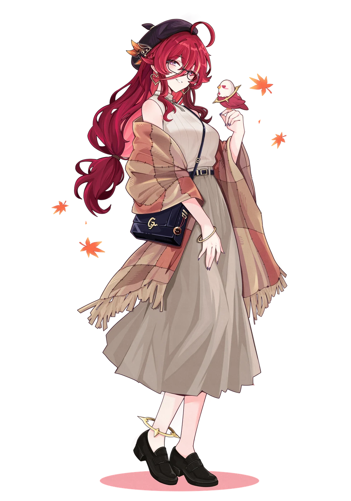
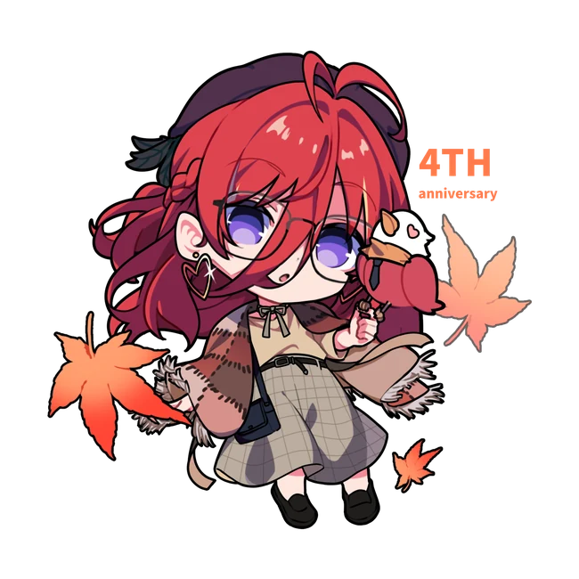

紙類周邊
200預計發放總量
週一至週五每日 25 份
週六 35 份 · 週日 40 份
拿取資格：不限

熙歌四週年應援咖啡廳
讓四季的想念，在同一片星空交會。
#四季熙光皆成歌
四季走過，喜歡依然。
在一個有咖啡香的午後，
和同樣喜歡熙歌的你，
一起為這段四週年的旅程留下紀念。
Every season, a song.

週一至週五每日 25 份
週六 35 份 · 週日 40 份
拿取資格：不限
週六 20 份 · 週日 20 份
拿取資格：訂閱熙歌 YT 頻道
前往熙歌 YouTube周邊照片將於後續公布。此處角色插畫為活動視覺，並非周邊商品照片。
每人低消為一杯飲品。
現場將發放周邊，使用投影機播放內容，並擺設過往熙歌場次的周邊。
紙類周邊不限領取資格；非紙類周邊於週六、週日發放，需訂閱熙歌 YouTube 頻道。每日預計發放份數請見「應援小禮」。
下一個四季，
也想和你一起。
#四季熙光皆成歌